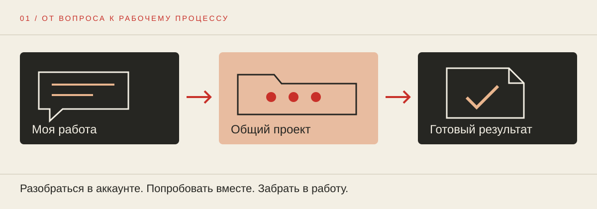

16 октября10:00–12:00 МСК
Передовой AI-контур и первый эксперимент
Первый проверяемый PR-процесс
Закрытая лаборатория / октябрь — ноябрь
Рабочие AI-процессы для руководителей коммуникаций. Шесть встреч: от первого эксперимента до требований к корпоративной системе.
Материалы первой встречи доступны: файлы, схемы и все запросы.

01 → 06
Первый проверяемый PR-процесс
Справка с картой источников
Одна фактура — несколько аудиторий
Логика решения и прототип слайдов
Работа с фото, видео и аудио
Пилоты, данные и требования